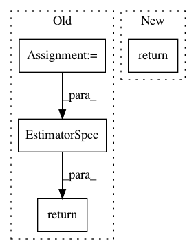

bf6c76a1a0c6cb5530f8a913fdb955726027597f,tensorflow_ranking/python/head.py,_RankingHead,create_estimator_spec,#_RankingHead#Any#Any#Any#Any#Any#,202
Before Change
if self._optimizer is not None:
if self._train_op_fn is not None:
raise ValueError("train_op_fn and optimizer cannot both be set.")
train_op = self._optimizer.minimize(
regularized_training_loss,
global_step=tf.compat.v1.train.get_global_step())
elif self._train_op_fn is not None:
train_op = self._train_op_fn(regularized_training_loss)
else:
raise ValueError("train_op_fn and optimizer cannot both be None.")
return tf.estimator.EstimatorSpec(
mode=mode,
predictions=logits,
loss=regularized_training_loss,
train_op=train_op)
After Change
// Train.
if mode == tf.estimator.ModeKeys.TRAIN:
return tf.estimator.EstimatorSpec(
mode=mode,
loss=regularized_training_loss,
train_op=_get_train_op(regularized_training_loss, self._train_op_fn,
self._optimizer),
predictions=logits)
raise ValueError("mode={} unrecognized".format(mode))
In pattern: SUPERPATTERN
Frequency: 3
Non-data size: 4
Instances
Project Name: tensorflow/ranking
Commit Name: bf6c76a1a0c6cb5530f8a913fdb955726027597f
Time: 2019-09-18
Author: xuanhui@google.com
File Name: tensorflow_ranking/python/head.py
Class Name: _RankingHead
Method Name: create_estimator_spec
Project Name: OpenNMT/OpenNMT-tf
Commit Name: ecbd2cf0e7eb922e27b2372ad5951c5fe06cc90d
Time: 2017-10-10
Author: guillaume.klein@systrangroup.com
File Name: opennmt/models/sequence_classifier.py
Class Name: SequenceClassifier
Method Name: _build
Project Name: tensorflow/minigo
Commit Name: b317d329aec0172a32cbee96868e1aa7db29727f
Time: 2018-07-11
Author: 10172976+sethtroisi@users.noreply.github.com
File Name: dual_net.py
Class Name:
Method Name: model_fn